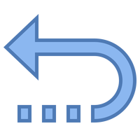

Minesweeper - User's Guide
Table of Contents
-
Game Rules & Instructions
-
Game Features
-
Troubleshooting Errors
Game Rules & Instructions
Objectives
- Your objective is to uncover all of the safe squares (squares with no mines in them)
- Flag all of the mines
Controls
- Left click a square to uncover it
- Right click to flag a square you suspect is a mine
- Right click an already flagged square to remove the flag
- Left click the smiley face to restart/start a new game
Rules & Tips
- The number displayed on a square shows the number of mines in the blocks surrounding it (including diagonally). If there is no number, then it means that all of the blocks surrounding it are safe
- There might be times when you have to guess the position of a mine. However, uncover other squares that you know are safe to get more information
- When you have to guess, always pick the square that has the lowest chance of being a mine


Game Features
Auto-Square Clearing
Upon clicking a safe square (a square with no mines surrounding it), all of it's surrounding squares get exposed automatically. Then, each of the safe squares in the surrounding blocks also get opened up. This function is repeated recursively, resulting in the player spending time actually playing game instead of wasting time exposing safe squares.
Bombs Display
Upon flagging a square, the number that represents the number of bombs on the board decrements itself by one. Note that the display always assumes that the flag was placed on a mined square (to prevent the player from cheating).
Character Status Display
The smiley face at the top shows the status of your character. It has a big smile when you are playing the game. Upon death, the smiley face turns into a dead face. When the player wins the game, a "cool guy" face is shown.
Difficulty Settings
This game supports multiple difficulty modes. Newer players should choose the "EASY" mode while veterans should choose "MEDIUM" or "HARD". The number of mines on the board changes according to the chosen difficulty. By default, the easy boards have 5 mines while the medium boards have 10 and the hard boards have 15 mines. The game also has two cheats. Can you find them?
Randomized Mine Placement
The game ensures that each new game is dynamic by randomizing the placement of mines. Therefore, each board is guaranteed to be different!
Right-Click Flagging
This game allows players to right click a square to flag it if they believe that the square is mined. After a square has been flagged, it will not be clickable (preventing the users from accidentally clicking the square). Right click a flagged square to deflag it.
Troubleshooting Errors
No Audio
Normally, a sound plays when the player dies or wins. If you do not hear that sound, try turning your volume up and ensure that your browser has Javascript enabled. If the issue persists, redownload the game.
Flag Gets Removed When Auto-Opening Squares
THIS IS NOT A BUG. This is how the game is intended to work. The flag only gets removed if it's on top of a safe square and has another safe square next it. If the flag was not automatically removed, the player will manually remove it anyways as the safe square will tell the player that the flag was misplaced.
Game is Unplayable (Cannot Click Images)
This problem is caused when websites are prevented from running Javascript by the browser. To fix this issue, re-enable Javascript on your browser.
How to enable Javascript on Chrome
How to enable Javascript on Firefox
Images Not Displaying
If you see broken image icons when playing the game, it means that some of the game files are missing. Redownload the game.